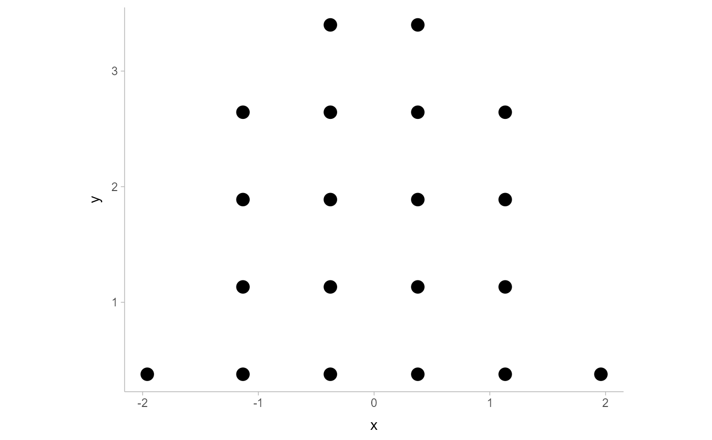

R/binning_methods.R
find_dotplot_binwidth.RdSearches for a nice-looking bin width to use to draw a dotplot such that
the height of the dotplot fits within a given space (maxheight).
find_dotplot_binwidth(x, maxheight, heightratio = 1)
| x | numeric vector of values |
|---|---|
| maxheight | maximum height of the dotplot |
| heightratio | ratio of bin width to dot height |
A suitable bin width such that a dotplot created with this bin width
and heightratio should have its tallest bin be less than or equal to maxheight.
This dynamic bin selection algorithm uses a binary search over the number of
bins to find a bin width such that if the input data (x) is binned
using a Wilkinson-style dotplot algorithm the height of the tallest bin
will be less than maxheight.
This algorithm is used by geom_dotsinterval() (and its variants) to automatically
select bin widths. Unless you are manually implementing you own dotplot grob
or geom, you probably do not need to use this function directly
bin_dots() for an algorithm can bin dots using bin widths selected
by this function; geom_dotsinterval() for geometries that use
these algorithms to create dotplots.
library(dplyr) library(ggplot2) x = qnorm(ppoints(20)) binwidth = find_dotplot_binwidth(x, maxheight = 4, heightratio = 1) binwidth #> [1] 0.6533213 bin_df = bin_dots(x = x, y = 0, binwidth = binwidth, heightratio = 1) bin_df #> # A tibble: 20 x 3 #> x y bin #> <dbl> <dbl> <dbl> #> 1 -1.70 0.327 1 #> 2 -1.70 0.980 1 #> 3 -0.984 0.327 2 #> 4 -0.984 0.980 2 #> 5 -0.984 1.63 2 #> 6 -0.330 0.327 3 #> 7 -0.330 0.980 3 #> 8 -0.330 1.63 3 #> 9 -0.330 2.29 3 #> 10 -0.330 2.94 3 #> 11 0.330 0.327 4 #> 12 0.330 0.980 4 #> 13 0.330 1.63 4 #> 14 0.330 2.29 4 #> 15 0.330 2.94 4 #> 16 0.984 0.327 5 #> 17 0.984 0.980 5 #> 18 0.984 1.63 5 #> 19 1.70 0.327 6 #> 20 1.70 0.980 6 # we can manually plot the binning above, though this is only recommended # if you are using find_dotplot_binwidth() and bin_dots() to build your own # grob. For practical use it is much easier to use geom_dots(), which will # automatically select good bin widths for you (and which uses # find_dotplot_binwidth() and bin_dots() internally) bin_df %>% ggplot(aes(x = x, y = y)) + geom_point(size = 4) + coord_fixed() 